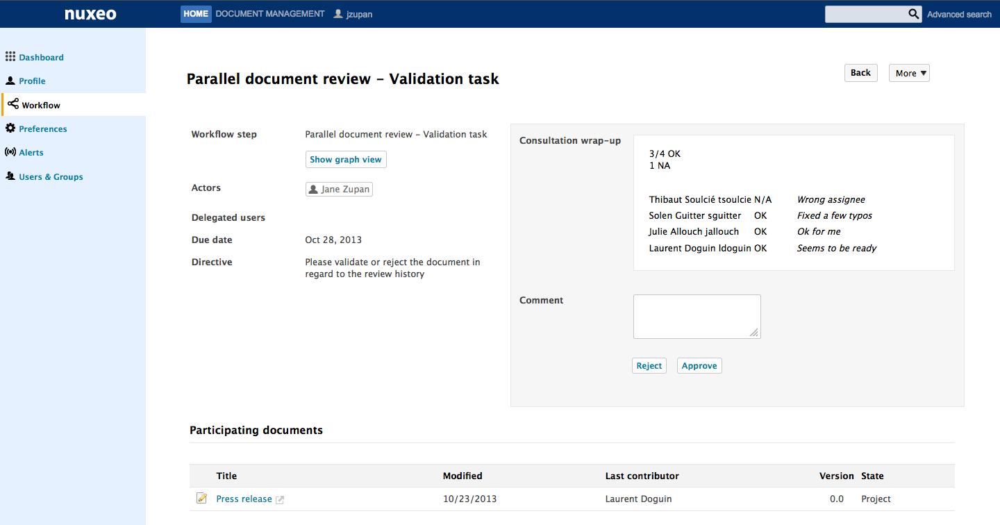
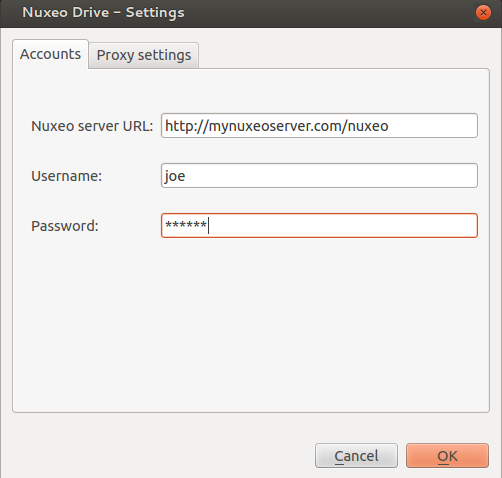
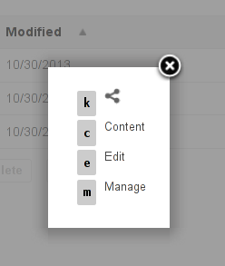

Nuxeo Platform 5.7.3 to 5.8 Release Notes
For Users
Workflow
We now have a task resolution screen. It's a dedicated screen to solve one of your task and stay focus on the workflow.

A workflow can be applied on multiple documents.
We added a parallel review workflow:
- First step, choose the participants
- Second step, every participants give their feedback.
- Third step, we present a summary of the 2nd step and the assignee can validate or reject the document.

Drive
Nuxeo Drive can be used behind a proxy.

We also added the unified settings panel:

Rich Text Widget
When using the rich editor and text, xml or markdown, we've added a Toggle Fullscreen button that displays the editing window in a fancybox. It makes it easier to see what you're doing.

Access Keys
We have added new access key binded to actions. Try maj-h, you'll see the different access keys available. Use ctrl-maj E to go to the Edit tab for example.

For Developers
Automation
We have added new operations:
Traces.Get - Traces.Get
Retrieve trace associated to a Chain or an Operation.
Traces.ToggleRecording - Traces.ToggleRecording
Toggle Automation call tracing (you can set the 'enableTrace' parameter if you want to explicitly set the traceEnable value.
Remove Permission - Document.RemovePermission
Remove permissions for a given user on the input document(s). Returns the document(s).
Add Permission - Document.AddPermission
Add Permission on the input document(s). Returns the document(s).
Concatenate PDFs - Blob.ConcatenatePDFs
Given a File document holding a PDF on the file:content property and 2 PDFs on the files:files property, the following operation will provide a PDF that is the result of the merge of all the PDFs, with the content of the one in file:content property first.
API
The document oriented REST API has been moved into a separate package to ease maintenance and upgrades.
We released an AngularJS sample application to showcase the API.
We've added pagination support for user and group endpoints.
We've added support for different version of the API:
Using the version segment is mandatory. The version is used mostly for giving guarantees to the API user that the JSON entities won't change when migrating to newer version of Nuxeo.
Redis
Several components in Nuxeo will make use of Redis as an optional feature. To configure Redis, the following extension point can be used:
Redis Service
To use the Redis service, do:
This service currently provides two methods:
Standard usage pattern is:
Redis WorkManager
We added a Redis based WorkManager. This is helpful for:
- High-Activity work queueing, to avoid saturating memory or blocking,
- Queue persistence, to avoid lost jobs on shutdown,
- New feature: node-aware job execution.
PDF Signing
Now you can apply more than one signature to a PDF and configure the position of the signatures following a predefined matrix. Here's a sample contribution:
UI/UX
Nuxeos's header has been rewritten using widgets displaying actions. Basically it means you can override each part of the header easily. Like the links, search box etc...
The double click shield has been activated by default.
You can Ajaxify any tab you want using the property nuxeo.jsf.useAjaxTabs. It means that when you click on a tab, only its content will be reloaded instead of the whole page. And the URL is updated automatically so you can have permlink with the selected tab, use the back button to go to a previously selected tab. This option can also be chosen when creating a new tab in Nuxeo Studio.
When you are in dev mode, the JavaScript files are not minified. This is much better when you need to debug JavaScript.
Mockito Integration
We've added Mockito support to our test framework. Here's an example:
Localization
Crowdin
Nuxeo has an account on Crowdin. It makes it easier for everyone to help translate Nuxeo in different languages. You can read this blog for more information.

Dutch Translation
Our partner Capgemini Netherlands has contributed the Dutch translation for Nuxeo.
For Administrators
Nuxeo.conf New Parameters
| Parameter | Default Value | Description |
|---|---|---|
| nuxeo.jsf.useAjaxTabs | false (unset) | Enable ajaxified tabs on document views. |
| org.nuxeo.prod | false | Setting this property to "true" will display a quite visible warning message in the Admin Center, stating that this is a production instance. This is useful for administrators who are sometimes confusing their Nuxeo production server with their test server (not to rat anyone out). |
| nuxeo.vcs.blocking-timeout-millis | 1O0 | Database maximum wait time to get a connection from the pool when all connections are in use, for Nuxeo repository (VCS). |
| nuxeo.vcs.idle-timeout-minutes | 10 | Database timeout after which connections not in use are removed from the pool, for Nuxeo repository (VCS). |
| nuxeo.vcs.fulltext.disabled | false | |
| nuxeo.vcs.noddl | false | |
| nuxeo.vcs.idtype | varchar |
Blogs and Websites Packaging
Blogs and Website have been removed from the DM module and are now independant packages.
Database Support
We have updated the MS SQL Server documentation with new recommendations.
PostgreSQL 9.2-1002 JDBC4 driver supports simple connection fail-over useful for high-availability configurations.
PostgreSQL 9.3 is officialy supported.